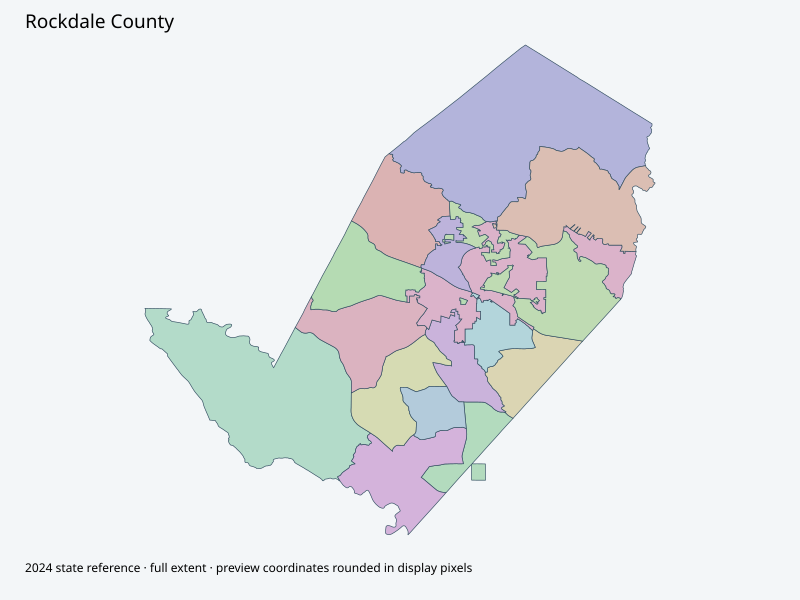

Map index · 16 explicit-FIPS 2024 map rows; 16 historical result identities. No approved crosswalk.

Full native coordinate/attribute extraction (gzip JSON) · Original complete statewide ZIP
Current election page links actual2023 map original (visually checked; no extractable text), separate2019 original retained. Page lists2026 polling-place changes; those do not prove boundary changes or matching historical result geometry.
Full objects, county source IDs/clocks and attributes: all 2,701 native contexts. isVirtual:false and source label precinct do not prove physical geometry.
| Source name | Full source GUID | Breakdown ordinal | Source | Map status |
|---|---|---|---|---|
| BA | 01000000-d884-2e72-49fc-08dcda4befca | 0 | 2024NovGen--rockdale-county-ga | unreviewed / no approved map join |
| BT | 01000000-d884-2e72-e8a6-08dcda4befda | 1 | 2024NovGen--rockdale-county-ga | unreviewed / no approved map join |
| CO | 01000000-d884-2e72-838f-08dcda4befea | 2 | 2024NovGen--rockdale-county-ga | unreviewed / no approved map join |
| FI | 01000000-d884-2e72-68a4-08dcda4beffb | 3 | 2024NovGen--rockdale-county-ga | unreviewed / no approved map join |
| FS | 01000000-d884-2e72-3b70-08dcda4bf00b | 4 | 2024NovGen--rockdale-county-ga | unreviewed / no approved map join |
| HC | 01000000-d884-2e72-38a4-08dcda4bf01b | 5 | 2024NovGen--rockdale-county-ga | unreviewed / no approved map join |
| HI | 01000000-d884-2e72-bb4d-08dcda4bf02a | 6 | 2024NovGen--rockdale-county-ga | unreviewed / no approved map join |
| LA | 01000000-d884-2e72-6d73-08dcda4bf03a | 7 | 2024NovGen--rockdale-county-ga | unreviewed / no approved map join |
| LO | 01000000-d884-2e72-e7f6-08dcda4bf049 | 8 | 2024NovGen--rockdale-county-ga | unreviewed / no approved map join |
| MA | 01000000-d884-2e72-6303-08dcda4bf059 | 9 | 2024NovGen--rockdale-county-ga | unreviewed / no approved map join |
| MI | 01000000-d884-2e72-44f1-08dcda4bf06c | 10 | 2024NovGen--rockdale-county-ga | unreviewed / no approved map join |
| OT | 01000000-d884-2e72-02a6-08dcda4bf07c | 11 | 2024NovGen--rockdale-county-ga | unreviewed / no approved map join |
| RO | 01000000-d884-2e72-8cfe-08dcda4bf08b | 12 | 2024NovGen--rockdale-county-ga | unreviewed / no approved map join |
| SM | 01000000-d884-2e72-b654-08dcda4bf09b | 13 | 2024NovGen--rockdale-county-ga | unreviewed / no approved map join |
| SP | 01000000-d884-2e72-e803-08dcda4bf0ac | 14 | 2024NovGen--rockdale-county-ga | unreviewed / no approved map join |
| ST | 01000000-d884-2e72-6de2-08dcda4bf0bc | 15 | 2024NovGen--rockdale-county-ga | unreviewed / no approved map join |
| Original row ordinal | DISTRICT | PRECINCT_I | PRECINCT_N |
|---|---|---|---|
| 553 | 247LA | LA | LA |
| 559 | 247MA | MA | MA |
| 560 | 247SP | SP | SP |
| 563 | 247FI | FI | FI |
| 565 | 247FS | FS | FS |
| 566 | 247OT | OT | OT |
| 567 | 247MI | MI | MI |
| 573 | 247BT | BT | BT |
| 574 | 247HI | HI | HI |
| 653 | 247LO | LO | LO |
| 656 | 247BA | BA | BA |
| 657 | 247ST | ST | ST |
| 658 | 247HC | HC | HC |
| 659 | 247SM | SM | SM |
| 660 | 247RO | RO | RO |
| 661 | 247CO | CO | CO |